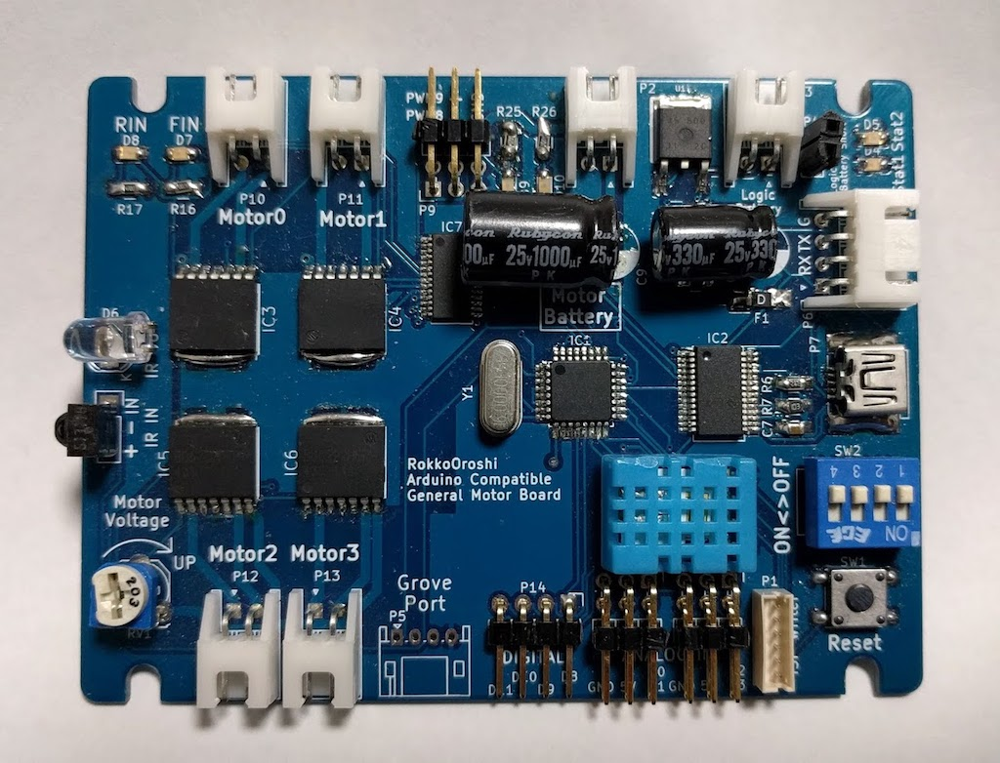

この文章はArduinoを触ったことがない初心者向けに書いたつもりです．
TPIP3サイズのArduino互換ボード
- 2016年度４号機で使用するために制作
- TPIP3の画像ボードとぴったり重ねられるように設計
- TPIPの制御ボードの置き換えを意図
制作例
| front | back |
|---|---|
|  |  |
何か絵が入れたかった
電源が不安定で試行錯誤したのでコンデンサが不恰好
機能一覧
- ４つのモータをPWM制御
- ２つのサーボモータ用PWM出力
- 赤外線送受信
- 温度センサー
- 状態表示用LEDx2
- アナログ入力対応汎用ポート x4 （5V, GND付き）
- 汎用ディジタルIOポート x4（二つはスイッチとポート兼用）
- スイッチ入力 x4（２つはIOポート兼用）
- Grove I2Cポート
- シリアル通信ポート
- バッテリー電圧監視
- USBシリアル変換IC搭載、Arduino DEIによる書き込み対応
- USB給電・バッテリー給電自動切り替え（バッテリー優先）